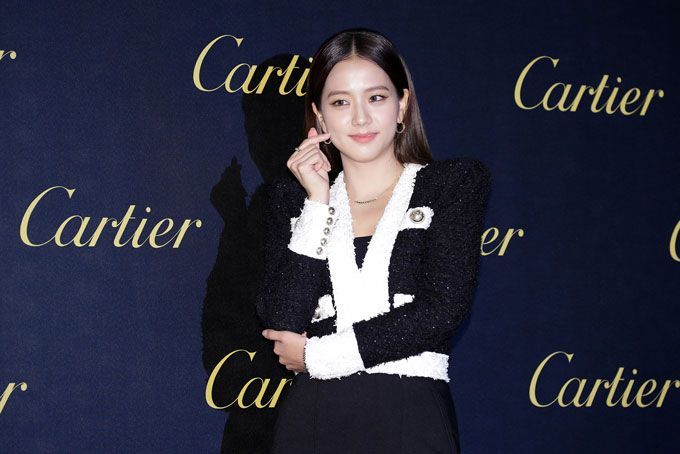

Achievements

Ambassador of Cartier years later
She receives praise for her performance.


Achievements |
||
| home|goals|gallery|contact | ||
| Time | Events | Images |
| July 2011 | Join YG as a trainee | |
| 2018–2020 — Advertising / Ambassador | Becomes the face of Dior Beauty (solo). Ambassador of Cartier years later |
 |
| December 18, 2021 – 10:00 PM KST — First episode aired. | Jisoo stars as Eun Yeong-ro. She receives praise for her performance. |
|
| March 31, 2023 – 1:00 PM KST | His solo album ME and the MV FLOWER are released | |
| January 6, 2024 | Golden Disc Awards — “Most Popular Artist (Female)” and “Best Digital Song | |
| Copy Right 2025 © | ||